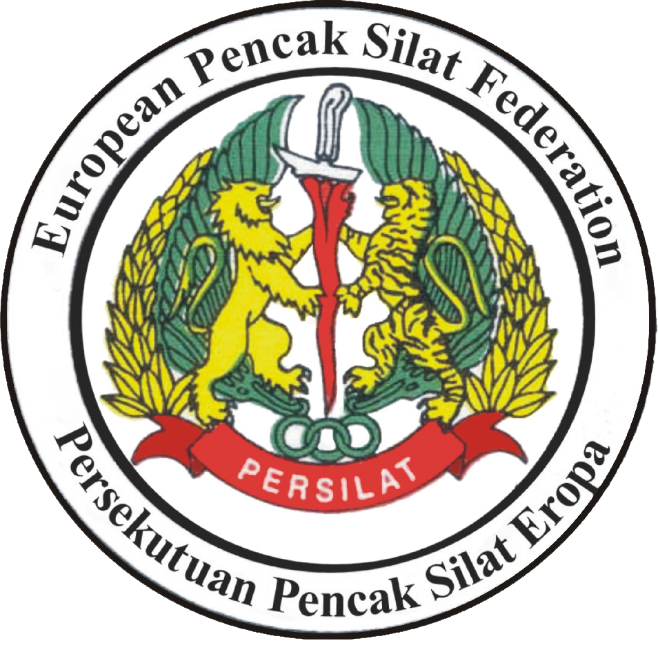

European Pencak Silat Federation

In order to build closer cooperation between the national Pencak Silat Federations in Europe and at the behest of the International Pencak Silat Federation (PERSILAT) based in Jakarta, Indonesia, the European Pencak Silat Federation (EPSF) was established.
On 22 September 2001, H.E. Bapak Abdul Irsan SH, Ambassador, Embassy of the Republic of Indonesia to the Netherlands officially inaugurated the EPSF in the presence of PERSILAT and delegates from the National Pencak Silat Federations of European member countries.
The EPSF is a regional coordinating body of PERSILAT and is governed by the PERSILAT Constitution. Additionally, rules and regulations for the internal running of the EPSF are set out in the 'Standing Order' approved by PERSILAT and the European member countries.
At the End-Term Plenary Meeting held in Chiang Rai, Thailand on 23 November 2012 the following EPSF office bearers were appointed and/or re-elected.
- President: Aidinal Alrasyid
- First Vice President (Eastern Europe) & Deputy President: Valeri Maistrovoy
- Second Vice President (Western Europe): Oliver Blancquaert
- Secretary General: Irfan Al Rashid
- Treasurer: Karin Langle
- Head Technical Council: Ivo Polak